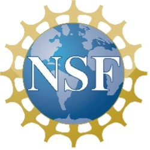

The Environmental Science Research Pathway at Baton Rouge Community College

The Pathway is designed to:
- Increase
scientific professional skills, including communication, literacy, and
teamwork.
- Prepare students with technical skills to enter the job
force.
- Provide high-wage employment while gaining skills.
-
Grow the STEM field with diverse researchers.
Pathway Participants will progress through 4-tiers:
1. Summer Internships: Selected incoming
freshmen participate in a summer research experience ($2500).
2. Louisiana Freshwater Sponge Project
Interns: Conduct research at BRCC while taking their first
30 hours of coursework ($15/hr).
3. Near-Peer Research
Mentors: After completing 30 hours of coursework and 500
research hours, interns will be promoted to mentors ($16/hr).
4. Externs: Within 12 hours of graduation,
students will be placed in an externship with a local environmental
science agency ($18.50/hr).
Benefits!
- Paid through continuous employment,
participants will have the opportunity to gain transferable skills,
including computer coding, microscopy, working with DNA, water analysis,
field collection research techniques, and many more!
- Participate
in all-expense-paid field research trips and conferences (hotel, meal
per diem, registration, and airfare).
- Receive paid leadership
training for near-peer mentors.
- Build your resume with skills and
presentations.
- Network with four-year institutions and
environmental science professionals.
Who is eligible to apply?
- Incoming freshmen
or current BRCC students who have completed fewer than 13 credit hours.
- Enroll at BRCC for Fall 2024.
- Major in: Associate of
Science General Science, Associate of Science Louisiana Transfer,
Associate of Science Pre-Engineering, or Associate of Science Computer
Science.
- Interest in pursuing an environmental science career.
Application Process
- Complete the online
application at http://tiny.cc/g1vkwz by April 12th.
- Participate
in a formal interview with the BRCC Pathway team.
- If accepted,
you will receive a letter of acceptance by May 13th.
Requirements to stay in the Pathway
-
Participation in the 200-hour paid summer workshop (online and lab
meetings).
- Maintain a minimum GPA of 2.0.
- Enroll in 9-15
credit hours each semester.
- Conduct 12-20 hours per week of paid
research at BRCC.
- Participate in research outreach events.
-
Contribute to a positive teamwork environment.
- Present research
at local conferences.
